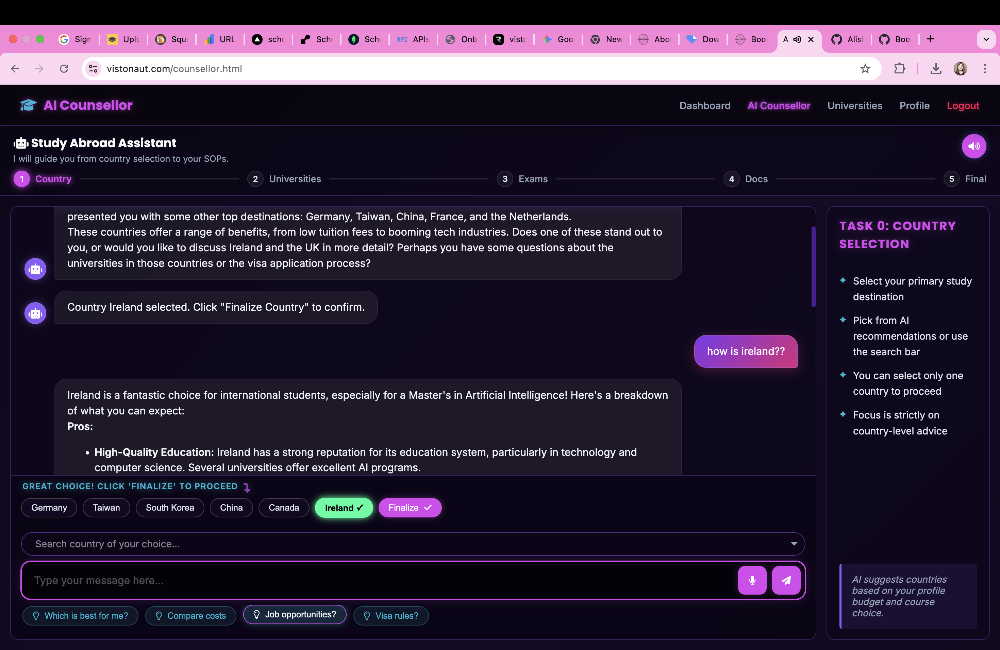

AI Counsellor
Ask once. Move forward with guided country and university decisions.
Chat through destination choices, compare universities, and keep the conversation tied to a structured admissions workflow instead of jumping between tabs and notes.
- Step-by-step progression across each admissions stage
- Clear next actions based on your profile and chosen path
- Guidance that stays connected to the rest of your application flow
